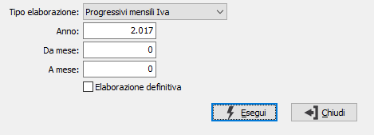

Ricalcolo dati Iva
Si tratta di un programma di servizio relativo al modulo Contabilità base che effettua il ricalcolo dei dati Iva, leggendo i movimenti Iva presenti nell’apposita tabella e ricostruendo i dati progressivi richiesti. Può essere eseguito nel caso in cui si verifichino discordanze fra i dati stampati sui registri Iva e i dati presenti sulle liquidazioni Iva o sui progressivi Iva di clienti e fornitori.

TIPO ELABORAZIONE: combo box per definire l’obiettivo della ricostruzione che si vuole eseguire. Valori ammessi: Progressivi mensili Iva; Progressivi Clienti/Fornitori.
ANNO: campo numerico per definire l’anno di cui si desidera effettuare la ricostruzione.
DA MESE: campo numerico per indicare il numero del mese, riferito all’anno di cui al campo precedente, da cui si desidera iniziare la ricostruzione.
A MESE: campo numerico per indicare il numero del mese, riferito all’anno di cui al campo precedente, a cui si desidera terminare la ricostruzione.
ELABORAZIONE DEFINITIVA: check box: la presenza della spunta, oltre a produrre il report di segnalazione anomalie, effettua il corretto aggiornamento dei valori progressivi indicati.